Ecoturismo
"La aventura vale la pena"
Inicio
Artesanias
Recintos Religiosos
Fiestas Patronales
Ferias Gastronómicas
"Mod lll Sub 2"
Lugares Ecoturisticos
Presa Verde
Ojo de agua
Santuario del Señor del Cerrito
San Miguel Yuxtepec
Tabla de cantidad de actividades que se pueden realizar en cada sitio
Contenido
Nombre de la actividad
Ubicación
Activdades que se pueden realizar
Precio
Fotografias
Presa verde
Es una presa ecoturística donde se pueden practicar deportes y actividades al aire libre, además de pasar un buen fin de semana con tu familia, cerca de la presa se encuentra una cancha de futbol soccer, puedes pasear viendo las maravillosas vistas de cada punto del lugar, así como también puedes subir a lo más alto, esperándote actividades como senderismo, escalamiento y ciclismo de montaña.
Ubicación
Está ubicada en Santa Isabel, manzana sexta de San Juan Jiquipilco estado de México. Para llegar se toma la carretera Ixtlahuaca-Jiquipilco y se siguen los señalamientos a Santa Isabel.
Actividades que se pueden realizar
Dia de picnic
Cabalgatas
Deportes
Futbol soccer
Pesca
Senderismo
Ciclismo
Precio
No hay precio de entrada
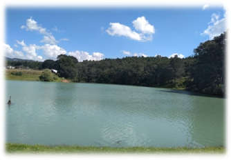 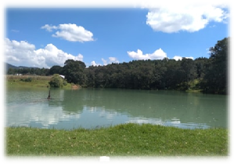
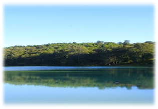 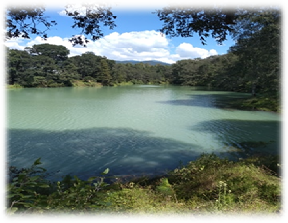
Ojo de agua
Es una un cuerpo de agua con montes, donde puedes pasear viendo las maravillosas vistas de cada punto del lugar, así como también puedes subir a lo más alto, esperándote actividades como senderismo, escalamiento incluso acampar.
Ubicación
Para llegar se toma la carretera Ixtlahuaca-Jiquipilco para llegar a Santa Isabel, manzana sexta de Jiquipilco Estado de México.
Actividades que se pueden realizar
Cabalgatas
Caminatas
Toma de fotografías de la flora y fauna
Deportes
Futbol soccer
Pesca
Senderismo
Ciclismo
Precio
No hay precio de entrada
Santuario del señor del cerrito
La conjunción de la riqueza histórica, cultural y natural en la zona norte del Estado de México se hace visible con el cerro de Santa Cruz Tepexpan localizado en la comunidad del mismo nombre perteneciente al municipio de Jiquipilco, donde en la cima se erige un santuario de estilo neoclásico al que cada día decenas de personas acuden para pedir o agradecer favores al “Señor del Cerrito”. El Cerro de Santa Cruz Tepexpan, es considerado una joya esplendorosa formada por la naturaleza, es el patrimonio ambiental más significativo de la comunidad que fusiona la tierra con la cultura.
Ubicación
Se ubica en el estado de México, municipio de Jiquipilco, en la localidad de Santa Cruz Tepexpan.
Actividades que se pueden realizar
Cabalgatas
Caminatas
Deportes
Ciclismo
Precio
No hay precio de entrada
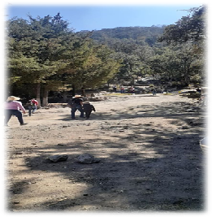 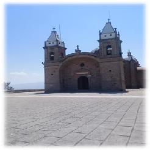
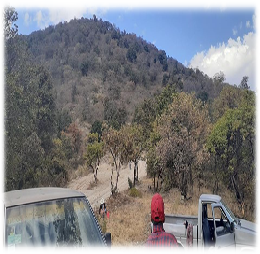 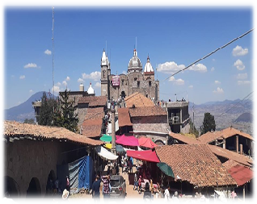
San Miguel Yuxtepec
El un colorido pueblo perteneciente al municipio de Jiquipilco con una amplia zona verde para realizar diversas actividades como pueden ser caminatas, cabalgatas, deporte con bicicletas, senderismo, acampar entre otras. De igual manera pudras presenciar su fiesta patronal.
Ubicación
Desdctividades que se pueden realizar
Se pueden practicar actividades al aire como lo son:
Cabalgatas
Caminatas
Acampar
Deportes
Ciclismo
Precio
No hay precio de entrada
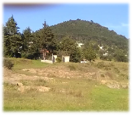 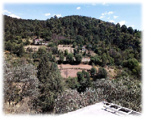
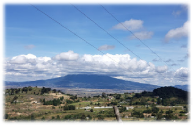 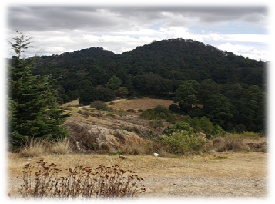
Tabla de cantidad de actividades que se pueden realizar en cada sitio
Cantidad de actividades que se pueden realizar
Ubicación
7
Presa Verde
8
Ojo De Agua
4
Santuario Del Señor Del Cerrito
6
San Miguel Yuxtepec
Datos de Contacto
Victor Hugo Rafael Castillo Citlali Becerril Carretero "Alumnos de CECyTEM Plantel Jiquipilco"
Correo institucional: racv030408hmcfsca0@soycecytem.com
Facilitador: Ing. Patricia Hernández Dolores
ModIII_Sub1: Desarrolla Aplicaciones Web